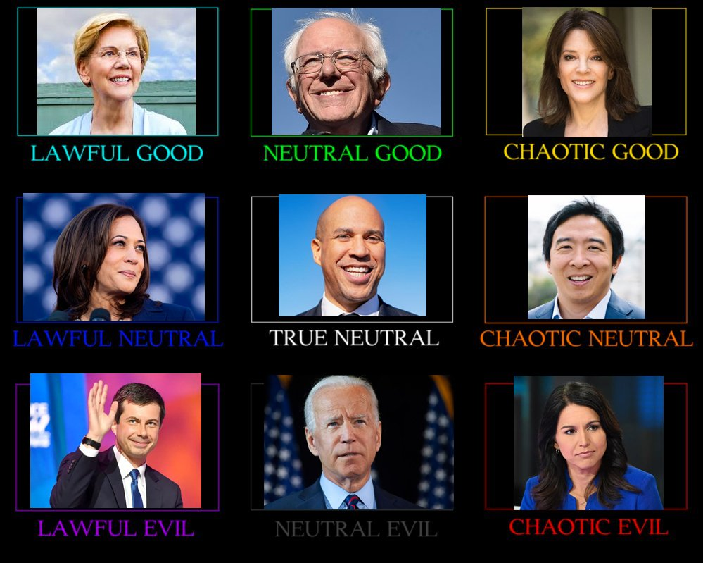
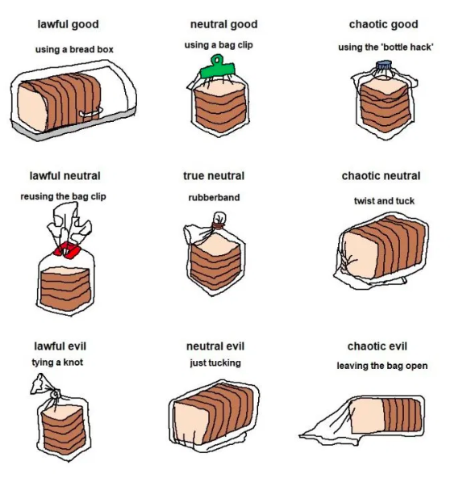

Okay, so, here's a disclaimer: I've never actually played Dungeons and Dragons before. I know, i'm a total fraud. But i'm very obsessed with the alignment chart, and that's what this project is about, so just bear with me on this and yell at me -- or high five me -- later. For the record, I do want to play D&D someday, I just haven't had a chance yet!
First off, you need to know the history behind the alignment chart. D&D is a roleplaying game, meaning you create a character to play as. Each character has an assigned alignment, which is a categorization of the ethical and moral perspective of the character in the game. To put it simply: what does your character lean more toward? Law or chaos? Good or evil? If neither of the choices for one or both of those questions seem right, an option between the two extremes could work: neutral. This creates the nine options available in the current version of the game (plus a 10th option -- unaligned -- that we are going to ignore).
You might be wondering how a character can be law abiding and evil, or chaotic and good. Well, many corporations in the United States are law-abiding businesses, but only want to make money and don't actually care about the individual person buying its products. That's lawful evil. Or take Robin Hood, for example. He steals (which is not great), but only takes from the rich and then gives everything to the poor, making him 100 percent chaotic good. Here's all nine options with definitions supplied by Wikipedia:
- Lawful Good: A lawful good character typically acts with compassion and always with honor and a sense of duty, though will often regret taking any action they fear would violate their code; even if they recognize such action as being good.
- Lawful Neutral: A lawful neutral character typically believes strongly in lawful concepts such as honor, order, rules, and tradition, but often follows a personal code in addition to, or even in preference to, one set down by a benevolent authority.
- Lawful Evil: A lawful evil character sees a well-ordered system as being easier to exploit and shows a combination of desirable and undesirable traits.
- Neutral Good: A neutral good character typically acts altruistically, without regard for or against lawful precepts such as rules or tradition. A neutral good character has no problems with cooperating with lawful officials, but does not feel beholden to them. In the event that doing the right thing requires the bending or breaking of rules, they do not suffer the same inner conflict that a lawful good character would
- True Neutral: A neutral character (also called "true neutral") is neutral on both axes and tends not to feel strongly towards any alignment, or actively seeks their balance.
- Neutral Evil: A neutral evil character is typically selfish and has no qualms about turning on allies-of-the-moment, and usually makes allies primarily to further their own goals. A neutral evil character has no compunctions about harming others to get what they want, but neither will they go out of their way to cause carnage or mayhem when they see no direct benefit for themselves. Another valid interpretation of neutral evil holds up evil as an ideal, doing evil for evil's sake and trying to spread its influence.
- Chaotic Good: A chaotic good character does what is necessary to bring about change for the better, disdains bureaucratic organizations that get in the way of social improvement, and places a high value on personal freedom, not only for oneself, but for others as well. Chaotic good characters usually intend to do the right thing, but their methods are generally disorganized and often out of sync with the rest of society.
- Chaotic Neutral: A chaotic neutral character is an individualist who follows their own heart and generally shirks rules and traditions. Although chaotic neutral characters promote the ideals of freedom, it is their own freedom that comes first; good and evil come second to their need to be free.
- Chaotic Evil: A chaotic evil character tends to have no respect for rules, other people's lives, or anything but their own desires, which are typically selfish and cruel. They set a high value on personal freedom, but do not have much regard for the lives or freedom of other people. Chaotic evil characters do not work well in groups because they resent being given orders and do not usually behave themselves unless there is no alternative.
These nine terms come together to create the alignment chart, which is the reason this project exists. It is a 3x3 group of squares, and each square is assigned one of the terms. There's also a 5x5 version as well as a terrible triangle version, but those don't matter so ignore them. But the best part about the alignment chart is that in recent years it has become a huge meme in the Internet community. It's really great. There are alignment charts for topics ranging from democratic candidates in the 2016 election to how you close a breadbag, which are both below. For even more, check out this subreddit. Or really just Google alignment chart memes. You'll find plenty.


So, you can see why these charts are so appealing. Or if you don't... well, I guess stop reading? In addition to what is now a staple meme, someone created an actual test to determine your alignment. This is what I asked people to take in the summer program. There were 41 students, 6 TA's, and 6 professors during the summer session. Yet, when I asked everyone to take the alignment test, only 15 students, 3 TA's, and 1 professor did it. Bummer right? In everyone else's defense, the test is kinda time consuming. All of the analysis is with the 19 people who took the test.
Now, here's what you've been waiting for: